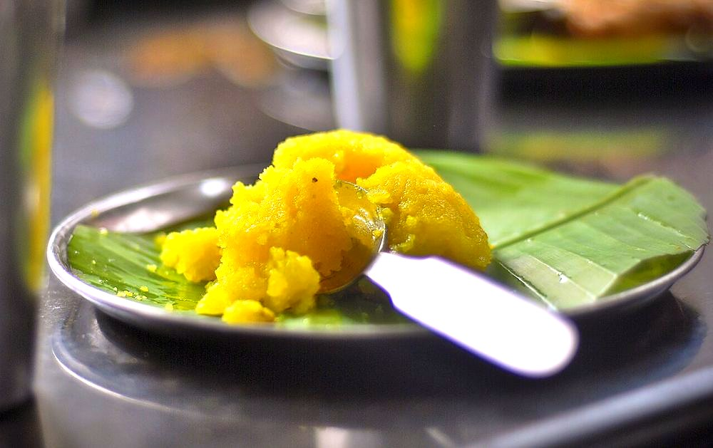

Contains: milk, gluten, tree nuts
Checked against the ingredient list for ten allergens: milk, egg, fish, crustaceans, tree nuts, peanuts, sesame, mustard, soy and gluten. Brands vary, so read the label on anything new to you.
Ingredients
Quantities for 6.
- 1 cup, fine semolina Ravabombay rava, not the coarse idli variety
- 1.25 cups Sugar
- 8 tbsp Ghee
- 250ml Milk
- 500ml Water
- a generous pinch, soaked in 2 tbsp warm milk Saffron
- 5 pods, seeds crushed Cardamom
- 15, halved Cashewoptional
- 2 tbsp Raisinsoptional
- a pinch Saltlifts the sweetnessoptional
Cookware
stovetop, kadhai
Before you start
- Soak the saffron in warm milk for 15 minutes so the colour and scent are fully drawn out.
- Measure the liquid at three times the volume of rava and have it simmering in a second pan before the rava is roasted. Cold liquid on hot rava lumps instantly.
- Warm the sugar so it dissolves without dropping the temperature of the pan.
Method
- Fry the cashews and raisins in 2 tbsp ghee until the nuts are golden and the raisins swell. Lift them out and set aside.
- Add 2 tbsp more ghee to the kadhai and roast the rava over low-medium heat for 6 to 7 minutes until it smells nutty and each grain is separate and pale gold.Roast on low. Rava browned too fast tastes toasted but is still raw inside, and the kesari turns gritty.
- In another pan bring the water, milk and pinch of salt to a rolling boil.
- Pour the boiling liquid into the roasted rava in a steady stream while stirring hard and continuously with the other hand.It will splutter violently. Keep stirring through it. This ten seconds decides whether you get lumps.
- Stir in the saffron milk, then cover and cook on low for 4 minutes until the rava has absorbed everything and looks fluffy.
- Add the sugar all at once. The mixture will loosen and turn liquid again; do not panic.Sugar always melts the mixture back down. Keep stirring and it firms up within four minutes.
- Stir over low heat for 5 minutes until it thickens and starts leaving the sides of the pan.
- Drizzle in the remaining ghee a tablespoon at a time, stirring, until the kesari is glossy and no longer sticks to the pan.
- Fold in the crushed cardamom and the fried cashews and raisins, and take it off the heat.
- Serve warm, either spooned into bowls or pressed into a greased tray and cut into squares once cool.
Storage
Keeps 3 days refrigerated. It sets firm when cold; reheat portions with a teaspoon of milk in a pan over low heat, or steam for 5 minutes, until soft and glossy again.
Nutrition Low estimate
Low protein: 5 g a serving, 5% of the calories
| Per serving134 g | Per 100 g | |
|---|---|---|
| Calories | 452 kcal | 337 kcal |
| Protein | 5.1 g | 4 g |
| Carbohydrate | 68.0 g | 50 g |
| of which sugars | 47.0 g | 35 g |
| Fibre | 1.3 g | 1 g |
| Fat | 18.7 g | 14 g |
| of which saturated | 11.4 g | 8 g |
| of which unsaturated | 6.1 g | 4 g |
Ingredients given to taste count as zero, so the real figures run a little higher. Estimated from raw ingredients using USDA FoodData Central.
Times, yields, allergens and nutrition are guidance. Use your own judgement on doneness and on storing. More in About.